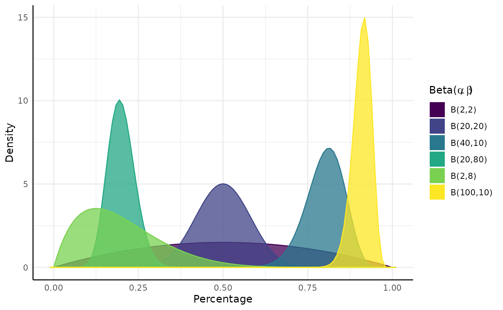
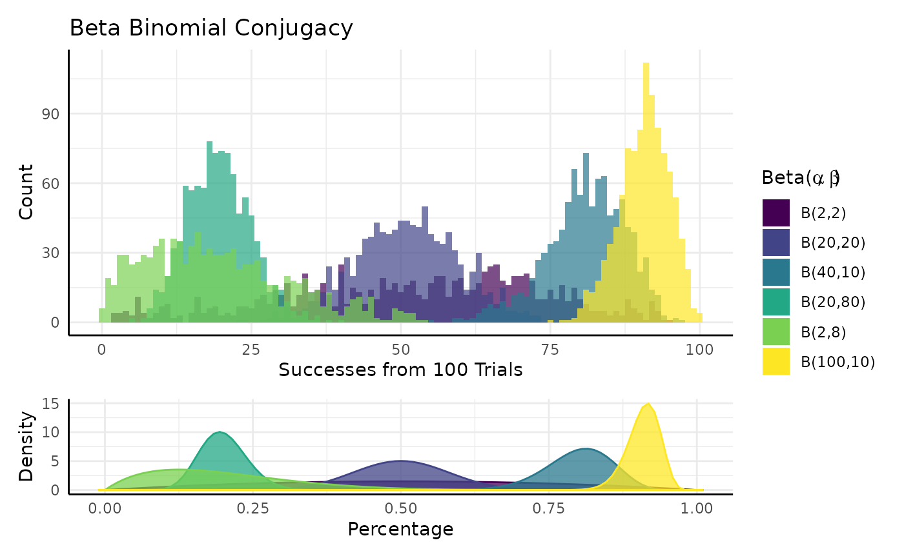
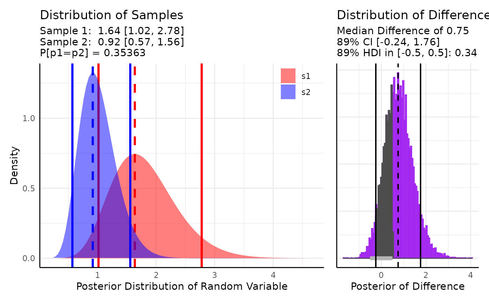
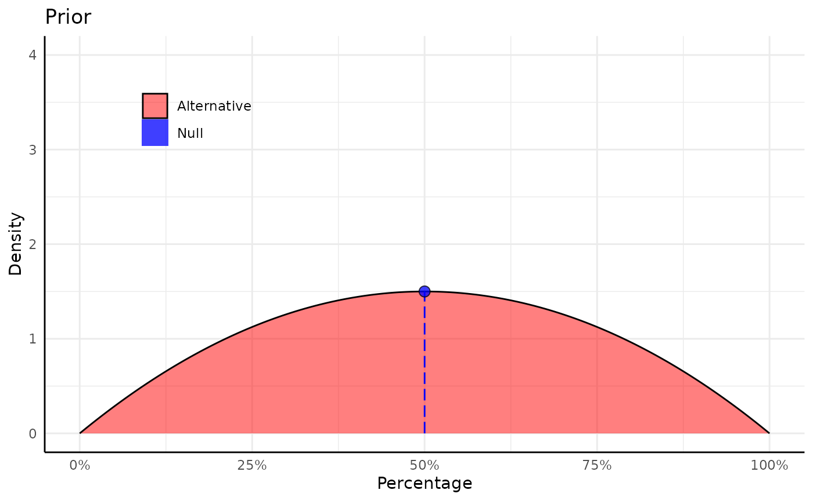
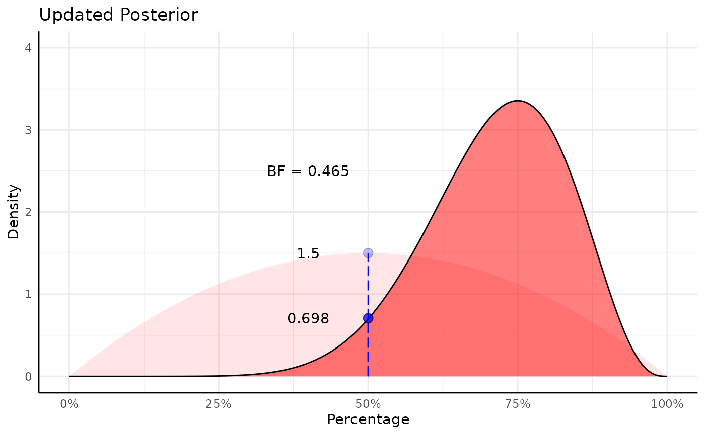
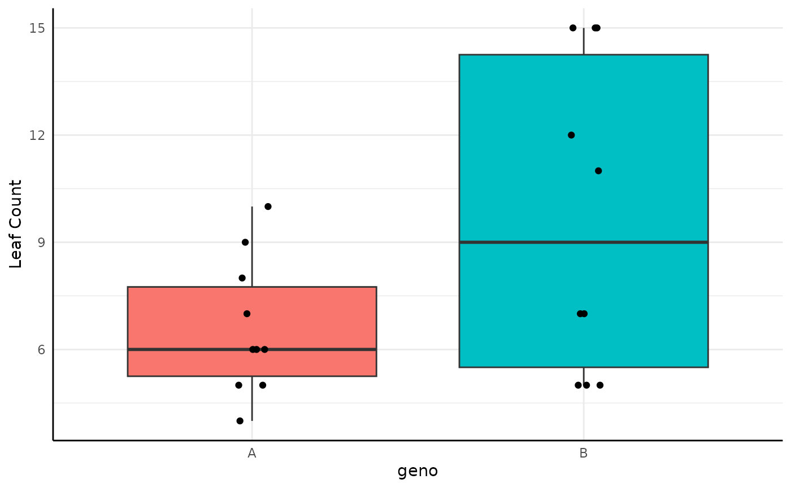
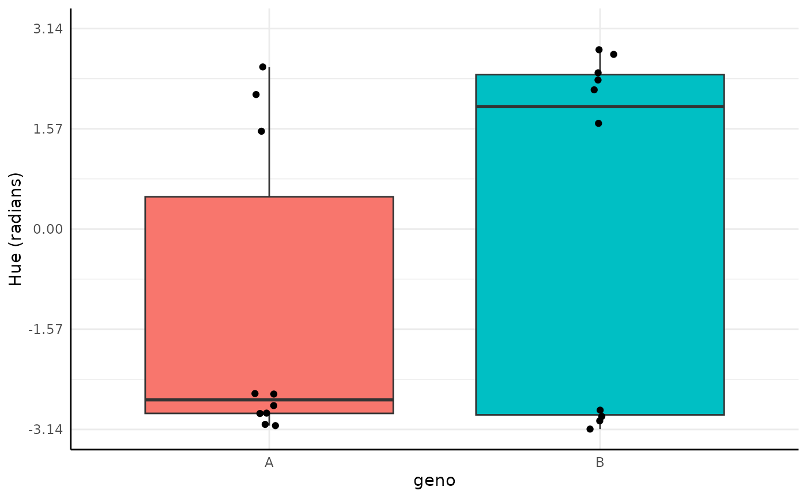

Bayesian Conjugacy
pcvr v1.1.2
Josh Sumner
Source:vignettes/articles/pcvrTutorial_conjugate.Rmd
pcvrTutorial_conjugate.RmdOutline
-
pcvrGoals - Load Package
- Bayesian Statistics Intro
- Bayesian Conjugacy Theory
- Bayesian Conjugacy Example
pcvr::conjugate- Supported Distributions
-
pcvr::conjugatearguments - Reading
conjugateoutput
pcvr Goals
Currently pcvr aims to:
- Make common tasks easier and consistent
- Make select Bayesian statistics easier
There is room for goals to evolve based on feedback and scientific needs.
Bayesian Statistics Intro
| Frequentist | Bayesian | |
|---|---|---|
| Fixed | True Effect | Observed Data |
| Random | Observed Data | True Effect |
| Interpretation | P[Data | No Effect] | P[Hypothesis | Observed Data] |
Bayesian Conjugacy Theory
= Posterior Distribution (Conclusion as a PDf)
= Prior Distribution (Knowledge as a PDF)
= Likelihood (Data that we collected)
= Marginal Distribution (this is the problem area)
Solving this integral is potentially a very difficult problem.
Historically there have been two answers:
- Find pairs of likelihood functions and Priors that integrate easily (these are the conjugate priors)
- Numerical Methods (Powerful computers making numeric approximations via MCMC or similar methods, see advanced growth modeling tutorial)
Verb Conjugation
This may all still seem abstract, so we’ll try to clear it up with two examples.
If we take a foundational verb like “To Be” then we can conjugate it depending on the context.

Now we add more information and the meaning gets more specific to describe that information.

We can do the same thing easily with some probability distributions. Similar to language we get more and more specific as the context is better described (as we add more data).

Bayesian Beta-Binomial Conjugacy
In the previous example we updated a fundamental verb with context.
Here we’ll update a probability distribution with data.
The P parameter of a Binomial distribution has a Beta conjugate prior.
$$\begin{equation} x_1, \ldots, x_n \sim Binomial(N, P) \\ P \sim Beta(\alpha, \beta) \\ Beta(\alpha', \beta' |(x_1, \ldots, x_n)) = Beta(\alpha, \beta) \cdot L(\alpha, \beta|(x_1, \ldots, x_n)) \\ \alpha` = \alpha + \Sigma(\text{Successes} \in x) \\ \beta` = \beta + \Sigma(\text{Failures} \in x) \end{equation}$$

Very simplistically we can think of conjugacy as when we know the distribution of a parameter in another distribution.

pcvr::conjugate
In pcvr 18 distributions are supported in the
conjugate function.
We’ll go over those distributions, what they tend to represent, how they are updated, and what the common alternative tests would be for that kind of data.
| Distribution | Data | Updating | Common Option |
|---|---|---|---|
| Gaussian | Normal | Z-test | |
| T | Normal Means | T-test | |
| Lognormal | Positive Right Skewed | Wilcox | |
| Lognormal2 | Positive Right Skewed | Wilcox | |
| Beta | Percentages | Wilcox | |
| Binomial | Success/Failure Counts | Wilcox/logistic regression | |
| Poisson | Counts | Wilcox/glm | |
| Neg-Binom. | Overdispersed Counts | ) | Wilcox/glm |
| Von Mises (2) | Circular | Watsons | |
| Uniform | Positive Flat | Wilcox | |
| Pareto | Heavy Tail | Wilcox | |
| Gamma | Right Skew | Wilcox | |
| Bernoulli | Logical | Logistic Regression | |
| Exponential | Right Skew | Wilcox/glm | |
| Bivariate Uniform | Flat | See Details | Distributional Model |
| Bivariate Gaussian | Normal | See Details | Distributional Model |
| Bivariate Lognormal | Positive Right Skew | See Details | Distributional Model |
## Warning: Removed 2 rows containing missing values or values outside the scale range
## (`geom_bar()`).
pcvr::conjugate arguments
conjugate takes one or two sets of SV (numeric) or MV
(matrix/df) data. Alternatively this can be a formula and a dataframe,
similar to stats::t.test.
The method argument specifies the distribution to be
used. See ?conjugate for further details.
The priors argument allows you to specify the prior
distribution. If left NULL then default priors will be used.
The plot argument controls whether or not a ggplot is
made of the results. See later examples.
The rope_range and rope_ci arguments allow
region-of-practical-equivalence (ROPE) testing using the difference in
the posterior distributions if two samples are given.
cred.int.level controls the credible intervals that are
calculated on the posterior distributions. The default of 89% is
arbitrary.
The hypothesis argument sets which hypothesis is tested
out of “greater”, “lesser”, “equal” and “unequal”. These are read as “s1
equal to s2”, etc.
The bayes_factor argument optionally lets you calculate
Bayes factors within each sample comparing the prior and posterior
odds.
pcvr::conjugate default priors
## Warning: Removed 2 rows containing missing values or values outside the scale range
## (`geom_bar()`).Using ROPE tests
ROPE (Region of Practical Equivalence) tests can be used for a
variety of purposes in conjugate.
Two of the main uses are to (1) evaluate whether the difference between two groups is biologically meaningful or to (2) compare a sample’s parameter against an existing expectation.
For the first case we pass 2 samples to conjugate and evaluate the difference in the posteriors.
Here we use two sets of random exponential data and check if the difference is within 0.5 of 0.
set.seed(123)
s1 <- rexp(10, 1.2)
s2 <- rexp(10, 1)
out <- conjugate(
s1 = s1, s2 = s2, method = "exponential",
priors = NULL,
rope_range = c(-0.5, 0.5), rope_ci = 0.89,
cred.int.level = 0.89, hypothesis = "equal"
)
plot(out)
We get a probability of 0.34 that the highest density interval of the difference falls in the interval [-0.5, 0.5], with a median difference of 0.75.
For the second case we might want to compare the mean of some data against an accepted interval for the mean:
set.seed(123)
s1 <- rnorm(20, 10, 2)
out <- conjugate(
s1 = s1, method = "t",
priors = list(mu = 12, sd = 3),
rope_range = c(11, 13),
hypothesis = "unequal"
)
plot(out)
Here we see about a 1 percent chance that the mean of our data is in the [11, 13] interval that we listed as a range similar to an alternative hypothesis in a T-test.
Using Bayes Factors
Bayes factors compare Bayesian models and can be useful for model
selection and in parameter estimation. In conjugate Bayes
factors compare prior vs posterior distributions either at points or
over ranges.
In this equation we relate the posterior odds to the prior odds multiplied by a “Bayes Factor”, that is .
Within conjugate
and
are either a point or a range in the support for the given
parameter.
We can work a simple example then compare to output from
conjugate.
null <- c(0.4, 0.6)
x_vals <- seq(0, 1, length.out = 500)
d_vals <- dbeta(x_vals, shape1 = 2, shape2 = 2) # density from the prior Beta(2, 2)
in_null <- null[1] < x_vals & x_vals < null[2]
label <- rep("Null", length(x_vals))
label[!in_null & x_vals < 0.4] <- "lower"
label[!in_null & x_vals > 0.6] <- "upper"
lower_tail <- pbeta(null[1], 2, 2, lower.tail = TRUE)
upper_tail <- pbeta(null[2], 2, 2, lower.tail = FALSE)
null_region <- 1 - lower_tail - upper_tail
prior_odds <- (lower_tail + upper_tail) / null_region
p1 <- ggplot(mapping = aes(x_vals, d_vals, fill = in_null, group = label)) +
geom_area(color = "black", linewidth = 0.5, alpha = 0.5) +
scale_fill_manual(values = c("red", "blue"), labels = c("Alternative", "Null")) +
annotate("text", x = 0.5, y = 1, label = round(null_region, 3)) +
annotate("text", x = 0.3, y = 1, label = round(lower_tail, 3)) +
annotate("text", x = 0.7, y = 1, label = round(upper_tail, 3)) +
annotate("text", x = 0.8, y = 2, label = paste0("Prior Odds = ", round(prior_odds, 3),
"\n= (", round(lower_tail, 3), " + ",
round(upper_tail, 3), ") / ",
round(null_region, 3))) +
labs(x = "Percentage", y = "Density", title = "Prior") +
scale_x_continuous(labels = scales::percent_format()) +
coord_cartesian(ylim = c(0, 4)) +
pcv_theme() +
theme(legend.position.inside = c(0.2, 0.8), legend.title = element_blank(),
legend.position = "inside")
p1
Now we update our prior with some data:
successes <- 8
failures <- 2
post_dvals <- dbeta(x_vals, 2 + successes, 2 + failures)
in_null <- null[1] < x_vals & x_vals < null[2]
label <- rep("Null", length(x_vals))
label[!in_null & x_vals < 0.4] <- "lower"
label[!in_null & x_vals > 0.6] <- "upper"
lower_post <- pbeta(0.4, 2 + successes, 2 + failures)
upper_post <- pbeta(0.6, 2 + successes, 2 + failures, lower.tail = FALSE)
null_post <- 1 - lower_post - upper_post
post_odds <- (lower_post + upper_post) / null_post
p2 <- ggplot(mapping = aes(x_vals, post_dvals, fill = in_null, group = label)) +
geom_area(color = "black", linewidth = 0.5, alpha = 0.5) +
scale_fill_manual(values = c("red", "blue"), labels = c("Alternative", "Null")) +
annotate("text", x = 0.5, y = 2, label = round(null_post, 3)) +
annotate("text", x = 0.3, y = 2, label = round(lower_post, 3)) +
annotate("text", x = 0.7, y = 2, label = round(upper_post, 3)) +
annotate("text", x = 0.2, y = 3, label = paste0("Posterior Odds = ", round(post_odds, 3),
"\n= (", round(lower_post, 3), " + ",
round(upper_post, 3), ") / ",
round(null_post, 3))) +
labs(x = "Percentage", y = "Density", title = "Posterior") +
scale_x_continuous(labels = scales::percent_format()) +
coord_cartesian(ylim = c(0, 4)) +
pcv_theme() +
theme(legend.position = "none")
p2
Our Bayes Factor is the ratio between the posterior and prior odds:
(b_factor <- post_odds / prior_odds)## [1] 2.194529Here the Bayes factor shows that the interval [0.4, 0.6] is 2.2 times less likely after updating our prior with this new data.
To do the same thing in conjugate we pass the bayes_factor argument
as a range and check the bf_1 column of the summary for the
results from sample 1. If we were interested in a point hypothesis then
we would only enter one value, say 0.5.
conj <- conjugate(s1 = list("successes" = 8, "trials" = 10),
method = "binomial",
priors = list(a = 2, b = 2),
bayes_factor = c(0.4, 0.6))
conj## Beta distributed Rate parameter of Binomial distributed data.
##
## Sample 1 Prior Beta(a = 2, b = 2)
## Posterior Beta(a = 10, b = 4)
## Sample 1 Bayes Factor in 0.4 to 0.6 = 2.195
##
## HDE_1 HDI_1_low HDI_1_high bf_1
## 1 0.75 0.5118205 0.8838498 2.194529Note that many distributions in conjugate will default
to very uninformative priors if you do not specify your own prior
distribution. It is very likely that a Bayes factor is essentially
meaningless in those cases. Put another way, for the factor relating
posterior vs prior odds to be meaningful there has to be some
information in the prior odds.
Point Hypothesis Bayes Factors
Using a point hypothesis we do the same thing, but now the “odds” are the density at a single point of the PDF instead of the sum of a region.
null <- 0.5
xrange <- c(0, 1)
x_vals <- seq(0, 1, length.out = 500)
d_vals <- dbeta(x_vals, shape1 = 2, shape2 = 2)
d_null <- d_vals[which.min(abs(x_vals - null))]
p1 <- ggplot(mapping = aes(x_vals, d_vals, fill = "Alternative")) +
geom_area(color = "black", linewidth = 0.5, alpha = 0.5) +
geom_segment(aes(x = 0.5, y = 0, yend = d_null), color = "blue", linetype = 5) +
geom_point(aes(fill = "Null"), x = null, y = d_null, shape = 21, size = 3,
key_glyph = "rect", color = "black", alpha = 0.75) +
scale_fill_manual(values = c("red", "blue"), labels = c("Alternative", "Null")) +
labs(x = "Percentage", y = "Density", title = "Prior") +
scale_x_continuous(labels = scales::percent_format()) +
coord_cartesian(ylim = c(0, 4)) +
pcv_theme() +
theme(legend.position.inside = c(0.2, 0.8), legend.title = element_blank(),
legend.position = "inside")
p1
# prior density at null
prior_null_analytic <- dbeta(0.5, shape1 = 2, shape2 = 2)
d_vals2 <- dbeta(x_vals, 2 + successes, 2 + failures)
d_vals2_null <- d_vals2[which.min(abs(x_vals - null))]
# posterior density at null
post_null_analytic <- dbeta(0.5, 2 + successes, 2 + failures)
p2 <- ggplot(mapping = aes(x_vals, d_vals2, fill = "Alternative")) +
geom_area(aes(x_vals, d_vals, fill = "Alternative"), alpha = 0.1) +
geom_segment(aes(x = 0.5, y = 0, yend = d_null), color = "blue", linetype = 5) +
geom_point(aes(fill = "Null"), x = null, y = d_null, shape = 21, size = 3,
key_glyph = "rect", color = "black", alpha = 0.25) +
geom_area(color = "black", linewidth = 0.5, alpha = 0.5) +
geom_segment(aes(x = 0.5, y = 0, yend = d_vals2_null), color = "blue", linetype = 5) +
geom_point(aes(fill = "Null"), x = null, y = d_vals2_null, shape = 21, size = 3,
key_glyph = "rect", color = "black", alpha = 0.75) +
scale_fill_manual(values = c("red", "blue"), labels = c("Alternative", "Null")) +
labs(x = "Percentage", y = "Density", title = "Updated Posterior") +
scale_x_continuous(labels = scales::percent_format()) +
coord_cartesian(ylim = c(0, 4)) +
pcv_theme() +
theme(legend.position = "none") +
annotate("text", x = 0.4, y = d_null, label = round(prior_null_analytic, 3)) +
annotate("text", x = 0.4, y = d_vals2_null, label = round(post_null_analytic, 3)) +
annotate("text", x = 0.4, y = 2.5,
label = paste0("BF = ", round(post_null_analytic / prior_null_analytic, 3)))
p2
(b_factor_point <- post_null_analytic / prior_null_analytic)## [1] 0.4654948Identically in conjugate:
conj <- conjugate(s1 = list("successes" = 8, "trials" = 10),
method = "binomial",
priors = list(a = 2, b = 2),
bayes_factor = 0.5)
conj## Beta distributed Rate parameter of Binomial distributed data.
##
## Sample 1 Prior Beta(a = 2, b = 2)
## Posterior Beta(a = 10, b = 4)
## Sample 1 Bayes Factor at 0.5 = 0.465
##
## HDE_1 HDI_1_low HDI_1_high bf_1
## 1 0.75 0.5118205 0.8838498 0.4654948Reading conjugate output
The conjugate function outputs a conjugate
class object. If you just print that object it will show the main
results in a easily human-readable format.
Lastly we’ll show a few interpretations of conjugate
output in the plant phenotyping context.
- Germination Rates
- Area
- Leaf Counts
- Hue
The barg function can also use the
conjugate class and will run a prior sensitivity analysis
and show the posterior predictive distribution.
Germination Rates
Germination Rates (or other binary outcomes like flowering or death) can make good sense as Beta-Binomial data.
res <- conjugate(
s1 = list(successes = df[df$geno == "A", "y"], trials = 10),
s2 = list(successes = df[df$geno == "B", "y"], trials = 10),
method = "binomial"
)Here we’d simply conclude that there is about a 19% chance that the germination rate is the same between these two genotypes after 1 week. We could do more with ROPE testing, but we’ll do that in the next example.
We can also look at the printed output which shows human-readable interpretations of hypothesis tests, ROPE tests, and Bayes Factors when applicable.
res## Beta distributed Rate parameter of Binomial distributed data.
##
## Sample 1 Prior Beta(a = 0.5, b = 0.5)
## Posterior Beta(a = 50.5, b = 50.5)
## Sample 2 Prior Beta(a = 0.5, b = 0.5)
## Posterior Beta(a = 63.5, b = 37.5)
##
## Posterior probability that S1 is equal to S2 = 18.951%
##
## HDE_1 HDI_1_low HDI_1_high HDE_2 HDI_2_low HDI_2_high hyp post.prob
## 1 0.5 0.4207941 0.5792059 0.6313131 0.5508745 0.7038946 equal 0.1895143Area
Lots of phenotypes are gaussian and conjugate can be
used similarly to a T-test with the “t” method. Consider area data that
looks like this example.
Here we include a ROPE test corresponding to our belief that any difference in Area of is biologically insignificant. We also show the formula syntax and use non-default priors here (since default priors include negative values which can’t happen with area).
res <- conjugate(
s1 = y ~ geno, s2 = df,
method = "t",
rope_range = c(-2, 2),
priors = list(mu = 10, sd = 2),
hypothesis = "unequal"
)Our plot shows about a 83% chance that these distributions are unequal and a 24% chance that the difference in means is within .
The other aspects of the output are a summary and the prior/posterior parameters as well as several things only used internally.
lapply(res, class)## $summary
## [1] "data.frame"
##
## $rope_df
## [1] "data.frame"
##
## $posterior
## [1] "list"
##
## $prior
## [1] "list"
##
## $plot_parameters
## [1] "list"
##
## $data
## [1] "list"
##
## $call
## [1] "call"The summary is a data.frame with a summary of the information in the plot. It is printed at the end of the object.
res## Normal distributed Mu parameter of T distributed data.
##
## Sample 1 Prior Normal(mu = 10, sd = 2)
## Posterior Normal(mu = 14.682, sd = 0.774)
## Sample 2 Prior Normal(mu = 10, sd = 2)
## Posterior Normal(mu = 11.51, sd = 1.077)
##
## Posterior probability that S1 is not equal to S2 = 91.466%
##
## Probability of the difference between Mu parameters being within [-2:2] using a % Credible Interval is 15.335% with an average difference of 3.177
##
##
## HDE_1 HDI_1_low HDI_1_high HDE_2 HDI_2_low HDI_2_high hyp post.prob
## 1 14.68175 13.44396 15.91955 11.50985 9.787879 13.23182 unequal 0.9146565
## HDE_rope HDI_rope_low HDI_rope_high rope_prob
## 1 3.1772 1.013366 5.223168 0.1533536The posterior is the prior list updated with the given data, this allows for Bayesian updating should you have a situation where supplying data piecemeal makes sense. The prior is in the same format.
do.call(rbind, res$posterior)## mu sd
## [1,] 14.68175 0.7744957
## [2,] 11.50985 1.077449Leaf Counts
There are also several phenotypes that are counts. Numbers of vertices, leaves, flowers, etc could all be used with one of the count distributions. Here we consider Poisson distributed leaf counts between two genotypes.

Here we model $X \sim Poisson(\lambda)\\ \lambda \sim \Gamma(A, B)$
res <- conjugate(
s1 = y ~ geno, s2 = df,
method = "poisson",
rope_range = c(-1, 1),
priors = list(a = 1, b = 1),
hypothesis = "unequal"
)
res## Gamma distributed Lambda parameter of Poisson distributed data.
##
## Sample 1 Prior Gamma(a = 1, b = 1)
## Posterior Gamma(a = 67, b = 11)
## Sample 2 Prior Gamma(a = 1, b = 1)
## Posterior Gamma(a = 98, b = 11)
##
## Posterior probability that S1 is not equal to S2 = 91.398%
##
## Probability of the difference between Lambda parameters being within [-1:1] using a % Credible Interval is 0% with an average difference of -2.782
##
##
## HDE_1 HDI_1_low HDI_1_high HDE_2 HDI_2_low HDI_2_high hyp post.prob
## 1 6 4.950908 7.325033 8.818182 7.519675 10.39265 unequal 0.9139806
## HDE_rope HDI_rope_low HDI_rope_high rope_prob
## 1 -2.781883 -4.754465 -1.020078 0We can comfortably say that the difference in the posteriors is not in [-1, 1] and there is a 91% chance that the Gamma distributions for are different.
Hue
Finally, we’ll show an example using what is likely the
least-familiar distribution in conjugate, the Von-Mises
distribution.
The Von-Mises distribution is a symmetric circular distribution defined on .
To use Von-Mises with data on other intervals there is a
boundary element in the prior that is used to rescale data
to radians for the updating before rescaling back to the parameter
space. See ?conjugate for more examples of the
boundary.
## `stat_bin()` using `bins = 30`. Pick better value with `binwidth`.
Note this is a very exaggerated example for the plant phenotyping setting since green happens to be in the middle of the hue circle, which wraps in the red colors.
If you do have wrapped circular data then looking at it in a non-circular space like this would be a problem. For values we normally get from plants other continuous methods can generally be useful.
ggplot(df, aes(x = geno, y = y, fill = geno)) +
geom_boxplot(outlier.shape = NA) +
geom_jitter(height = 0, width = 0.05) +
pcv_theme() +
labs(y = "Hue (radians)") +
scale_y_continuous(limits = c(-pi, pi), breaks = round(c(-pi, -pi / 2, 0, pi / 2, pi), 2)) +
theme(legend.position = "none")
res <- conjugate(
s1 = y ~ geno, s2 = df,
method = "vonmises2",
priors = list(mu = 0, kappa = 0.5, boundary = c(-pi, pi), n = 1)
)
res## Von Mises distributed Direction parameter of Von Mises distributed data.
##
## Sample 1 Prior Von Mises(mu = 0, kappa = 0.5, boundary = -3.142, n = 3.142, mu = 1)
## Posterior Von Mises(mu = 3.094, kappa = 1.817, n = 11, boundary = -3.142, mu = 3.142)
## Sample 2 Prior Von Mises(mu = 0, kappa = 0.5, boundary = -3.142, n = 3.142, mu = 1)
## Posterior Von Mises(mu = 2.727, kappa = 2.509, n = 11, boundary = -3.142, mu = 3.142)
##
## Posterior probability that S1 is equal to S2 = 79.05%
##
## HDE_1 HDI_1_low HDI_1_high HDE_2 HDI_2_low HDI_2_high hyp post.prob
## 1 3.093691 1.668768 -1.717893 2.727366 1.497517 -2.43441 equal 0.7904981
plot(res)
Here our distributions are very similar and there is about a 79% chance that their parameters are the same given this data and our (very wide) priors.
Note that if you use data in a different boundary space
than radians the rope_range would be given in the observed
parameter space, not in radians.
Conclusion
Hopefully this has been a useful introduction to Bayesian conjugacy.
Please direct questions/issues with pcvr::conjugate to
the pcvr github issues or help-datascience slack channel for DDPSC
users.